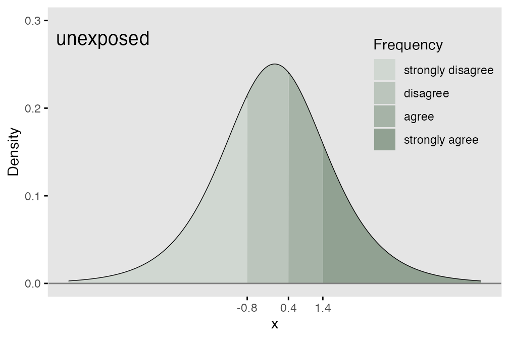
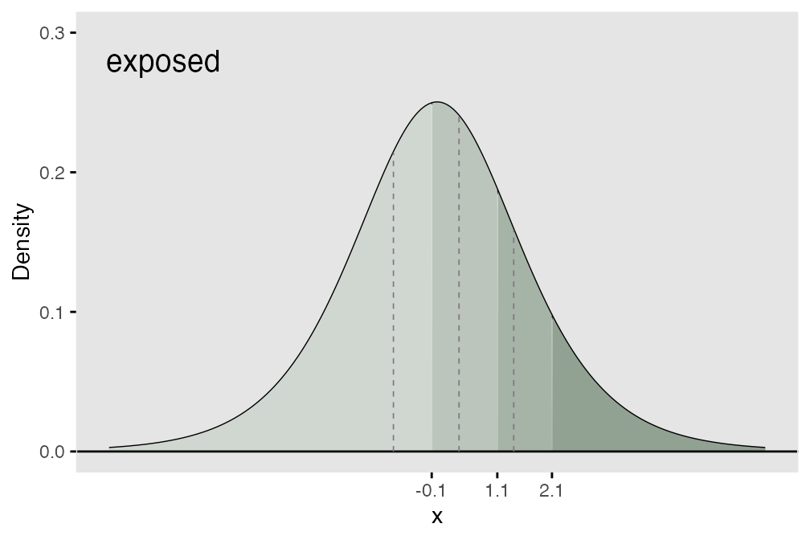
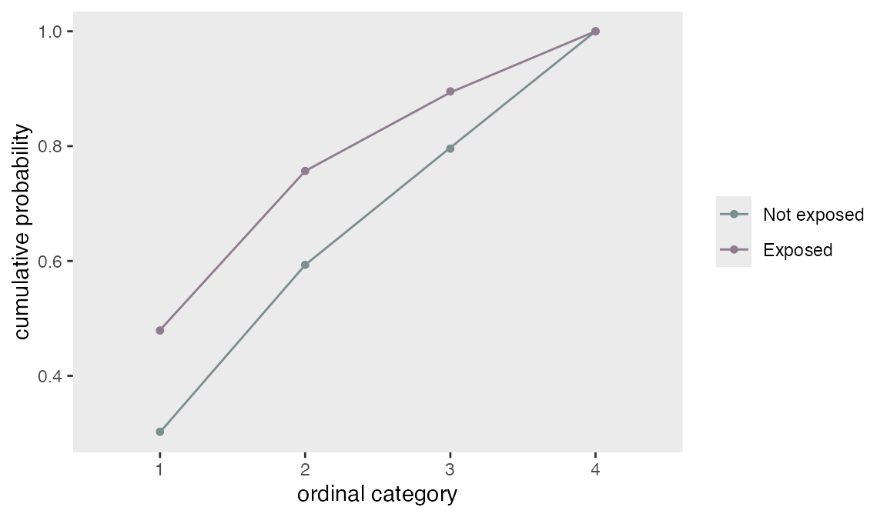
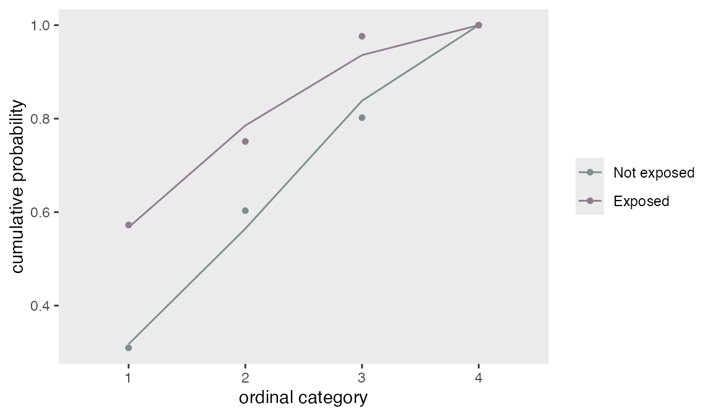

## Warning in register(): Can't find generic `scale_type` in package ggplot2 to
## register S3 method.Using the defData and genData functions, it is relatively easy to specify multinomial distributions that characterize categorical data. Order becomes relevant when the categories take on meanings related to strength of opinion or agreement (as in a Likert-type response) or frequency. A motivating example could be when a response variable takes on four possible values: (1) strongly disagree, (2) disagree, (4) agree, (5) strongly agree. There is a natural order to the response possibilities.
It is common to summarize the data by looking at cumulative probabilities, odds, or log-odds. Comparisons of different exposures or individual characteristics typically look at how these cumulative measures vary across the different exposures or characteristics. So, if we were interested in cumulative odds, we would compare \[\small{\frac{P(response = 1|exposed)}{P(response > 1|exposed)} \ \ vs. \ \frac{P(response = 1|unexposed)}{P(response > 1|unexposed)}},\]
and continue until the last (in this case, third) comparison
\[\small{\frac{P(response \le 3|exposed)}{P(response > 3|exposed)} \ \ vs. \ \frac{P(response \le 3|unexposed)}{P(response > 3|unexposed)}},\]
We can use an underlying (continuous) latent process as the basis for data generation. If we assume that probabilities are determined by segments of a logistic distribution (see below), we can define the ordinal mechanism using thresholds along the support of the distribution. If there are \(k\) possible responses (in the meat example, we have 4), then there will be \(k-1\) thresholds. The area under the logistic density curve of each of the regions defined by those thresholds (there will be \(k\) distinct regions) represents the probability of each possible response tied to that region.

In the cumulative logit model, the underlying assumption is that the odds ratio of one population relative to another is constant across all the possible responses. This means that all of the cumulative odds ratios are equal:
\[\small{\frac{codds(P(Resp = 1 | exposed))}{codds(P(Resp = 1 | unexposed))} = \ ... \ = \frac{codds(P(Resp \leq 3 | exposed))}{codds(P(Resp \leq 3 | unexposed))}}\]
In terms of the underlying process, this means that each of the thresholds shifts the same amount (as shown below) where we add 0.7 units to each threshold that was set for the exposed group. What this effectively does is create a greater probability of a lower outcome for the unexposed group.

In the R package ordinal, the model is fit using function clm. The model that is being estimated has the form
\[log \left( \frac{P(Resp \leq i)}{P(Resp > i)} | Group \right) = \alpha_i - \beta*I(Group=exposed) \ \ , \ i \in \{1, 2, 3\}\]
The model specifies that the cumulative log-odds for a particular category is a function of two parameters, \(\alpha_i\) and \(\beta\). (Note that in this parameterization and the model fit, \(-\beta\) is used.) \(\alpha_i\) represents the cumulative log odds of being in category \(i\) or lower for those in the reference exposure group, which in our example is Group A. \(\alpha_i\) also represents the threshold of the latent continuous (logistic) data generating process. \(\beta\) is the cumulative log-odds ratio for the category \(i\) comparing the unexposed to reference group, which is the exposed. \(\beta\) also represents the shift of the threshold on the latent continuous process for the exposed relative to the unexposed. The proportionality assumption implies that the shift of the threshold for each of the categories is identical.
To generate ordered categorical data using simstudy, there is a function genOrdCat.
baseprobs <- c(0.31, 0.29, .20, 0.20)
defA <- defData(varname = "exposed", formula = "1;1", dist = "trtAssign")
defA <- defData(defA, varname = "z", formula = "-0.7*exposed", dist = "nonrandom")
set.seed(130)
dT_1_cat <- genData(25000, defA)
dX <- genOrdCat(dT_1_cat, adjVar = "z", baseprobs, catVar = "r")Estimating the parameters of the model using function clm, we can recover the original parameters quite well.
## formula: r ~ exposed
## data: dX
##
## link threshold nobs logLik AIC niter max.grad cond.H
## logit flexible 25000 -32339.34 64686.68 4(0) 3.11e-08 1.7e+01
##
## Coefficients:
## Estimate Std. Error z value Pr(>|z|)
## exposed -0.7576 0.0234 -32.4 <2e-16 ***
## ---
## Signif. codes: 0 '***' 0.001 '**' 0.01 '*' 0.05 '.' 0.1 ' ' 1
##
## Threshold coefficients:
## Estimate Std. Error z value
## 1|2 -0.8391 0.0180 -46.7
## 2|3 0.3768 0.0173 21.8
## 3|4 1.3696 0.0201 68.3In the model output, the exposed coefficient of -1.15 is the estimate of \(-\beta\) (i.e. \(\hat{\beta} = 1.15\)), which was set to -1.1 in the simulation. The threshold coefficients are the estimates of the \(\alpha_i\)’s in the model - and match the thresholds for the unexposed group.
The log of the cumulative odds for groups 1 to 4 from the data without exposure are
(logOdds.unexp <- log(odds(cumsum(dX[exposed == 0, prop.table(table(r))])))[1:3])## 1 2 3
## -0.83 0.38 1.36And under exposure:
(logOdds.expos <- log(odds(cumsum(dX[exposed == 1, prop.table(table(r))])))[1:3])## 1 2 3
## -0.084 1.135 2.147The log of the cumulative odds ratios for each of the four groups is
logOdds.expos - logOdds.unexp## 1 2 3
## 0.75 0.76 0.79A plot of the modeled cumulative probabilities (the lines) shows that the proportionality assumption fit the observed data (the points) quite well.

By default, the function genOrdCat generates ordinal categorical data under the assumption of proportional cumulative odds. On the underlying logistic scale, this means that there is a consistent shift of the thresholds; in the initial example above, the exposure thresholds were shifted 0.7 units to the right on the logistic scale. In the figure below, the rightward shift of the threshold to the left varies for each threshold (0.4 units for the first threshold, 0.0 for the second, and 1.7 for the last), which violates the underlying assumption of proportionality:
It is possible to generate data under these assumptions using the npVar and npAdj arguments. npVar indicates the variable(s) for which the non-proportional assumption is violated, and npAdj indicates the various shifts of the intervals. (Note that the last cut point is at Inf, so there is no impact of a shift related to that threshold.)
baseprobs <- c(0.31, 0.29, .20, 0.20)
npAdj <- c(-0.4, 0.0, -1.7, 0)
dX <- genOrdCat(dT_1_cat, baseprobs = baseprobs, adjVar = "z",
catVar = "r", npVar = "exposed", npAdj = npAdj)The calculation of the log cumulative odds follows as before:
(logOdds.unexp <- log(odds(cumsum(dX[exposed == 0, prop.table(table(r))])))[1:3])## 1 2 3
## -0.80 0.42 1.40And under exposure:
(logOdds.expos <- log(odds(cumsum(dX[exposed == 1, prop.table(table(r))])))[1:3])## 1 2 3
## 0.29 1.10 3.72But, now, the log of the cumulative odds ratios for each of the four groups varies across the different levels.
logOdds.expos - logOdds.unexp## 1 2 3
## 1.09 0.69 2.32This is confirmed by a plot of the model fit with a proportional odds assumption along with the observed cumulative proportions. Since the model imposes a consistent shift of each threshold, the observed points no longer lie along the prediction line, indicating a violation of the proportional odds assumption:

Function genOrdCat generates multiple categorical response variables that may be correlated. For example, a survey of multiple Likert-type questions could have many response variables. The function generates correlated latent variables (using a normal copula) to simulate correlated categorical outcomes. The user specifies a matrix of probabilities, with each row representing a single item or categorical variable. The across each row must be 1. Adjustment variables can be specified for each item, or a single adjustment variable can be specified for all items. The correlation is on the standard normal scale and is specified with a value of rho and a correlation structure (independence, compound symmetry, or AR-1). Alternatively, a correlation matrix can be specified.
In this example, there are 5 questions, each of which has three possible responses: “none”, “some”, “a lot”. The probabilities of response are specified in a \(5 \times 3\) matrix, and the rows sum to 1:
baseprobs <- matrix(c(0.2, 0.1, 0.7,
0.7, 0.2, 0.1,
0.5, 0.2, 0.3,
0.4, 0.2, 0.4,
0.6, 0.2, 0.2),
nrow = 5, byrow = TRUE)
# generate the data
set.seed(333)
dT_5_cat <- genData(10000)
dX <- genOrdCat(dT_5_cat, adjVar = NULL, baseprobs = baseprobs,
prefix = "q", rho = 0.15, corstr = "cs", asFactor = FALSE)The observed correlation of the items is slightly less than the specified correlations as expected:
## q1 q2 q3 q4 q5
## q1 1.00 0.08 0.10 0.10 0.08
## q2 0.08 1.00 0.09 0.09 0.09
## q3 0.10 0.09 1.00 0.11 0.11
## q4 0.10 0.09 0.11 1.00 0.10
## q5 0.08 0.09 0.11 0.10 1.00However, the marginal probability distributions of each item match quite closely with the specified probabilities:
dM <- melt(dX, id.vars = "id")
dProp <- dM[ , prop.table(table(value)), by = variable]
dProp[, response := rep(seq(3), 5)]
# observed probabilities
dcast(dProp, variable ~ response, value.var = "V1", fill = 0)## variable 1 2 3
## 1: q1 0.20 0.10 0.70
## 2: q2 0.69 0.21 0.10
## 3: q3 0.50 0.20 0.30
## 4: q4 0.40 0.20 0.40
## 5: q5 0.60 0.20 0.21
# specified probabilities
baseprobs## [,1] [,2] [,3]
## [1,] 0.2 0.1 0.7
## [2,] 0.7 0.2 0.1
## [3,] 0.5 0.2 0.3
## [4,] 0.4 0.2 0.4
## [5,] 0.6 0.2 0.2In the next example, the structure of the correlation is changed to AR-1, so the correlation between questions closer to each other is higher than for questions farther apart. But the probability distributions are unaffected:
dX <- genOrdCat(dT_5_cat, adjVar = NULL, baseprobs = baseprobs,
prefix = "q", rho = 0.40, corstr = "ar1", asFactor = FALSE)
# correlation
round(dX[, cor(cbind(q1, q2, q3, q4, q5))], 2)## q1 q2 q3 q4 q5
## q1 1.00 0.22 0.10 0.05 0.02
## q2 0.22 1.00 0.29 0.10 0.03
## q3 0.10 0.29 1.00 0.31 0.11
## q4 0.05 0.10 0.31 1.00 0.29
## q5 0.02 0.03 0.11 0.29 1.00
dM <- melt(dX, id.vars = "id")
dProp <- dM[ , prop.table(table(value)), by = variable]
dProp[, response := rep(seq(3), 5)]
# probabilities
dcast(dProp, variable ~ response, value.var = "V1", fill = 0)## variable 1 2 3
## 1: q1 0.20 0.10 0.692
## 2: q2 0.70 0.20 0.099
## 3: q3 0.50 0.20 0.300
## 4: q4 0.39 0.21 0.397
## 5: q5 0.60 0.19 0.204